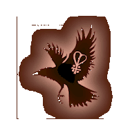

Introduction
by Brigid Gwernan

The Plant Bran is an extended family (hereditary) system of Worship and Wisecraft handed down to us through Gwenfran Gwernan. The word 'Plant' means 'family', and Bran is the Celtic deity of death and resurrection, son of Llyr.
Knowledge of the Natural World and working with the forces of Nature, are important in this tradition. Of old, knowledge was passed on orally from parents and grandparents to children, beginning when the children were quite young, normally about seven years old; an important time in their mental development.
Unfortunately, times have changed; members of families have moved away from each other in pursuit of work, and two major wars have disrupted the continuity necessary for this kind of learning.
It is now up to us as young (or not so young!) adults, to re-discover what we can of the Old Ways and use our knowledge to enhance our lives. If we can transmit at least some of this to our young folk, so much the better.
Our respect for Nature and Natural Forces is shown outwardly by our worship of the God and Goddess, our First Parents. We celebrate the Turning of the Year at the festivals, and meet together at the Full Moon and at other times for 'work' as well as worship. By these means we tune into the changing seasons and the different phases of the Moon.
On a practical level, the first essential is that we learn to recognize trees, herbaceous plants, fungi and animal wildlife where they exist around us and beyond. This involves visits to 'wild' places, with the senses tuned to observe and remember.
We must then stand, still and quiet, and learn to communicate with the living things around us.
We must go out at all seasons and in all weathers; learn weather lore and bird migration patterns.
On clear nights we should observe the stars and the Moon, and begin to know its phase instinctively by our feelings.
In order to work with the elements of Earth, Air, Fire and Water, it is necessary to understand the forces associated with each wherever they occur.
One of the most important faculties we must develop is the ability to visualize - to make clear pictures in the mind. This involves allowing the creative side of our brain to come to the fore, and shut out the busy everyday thoughts which can interfere with it.
Other 'magical' techniques will appeal to us; healing, dowsing, Tarot, astrology, etc., and these we develop by whatever means we feel are appropriate.
The deeper mysteries of this tradition are to be found in the communion with the natural world and the study of the Celtic mythological cycles.